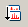

The spectrum of a product ion that was produced by the precursor ion can be displayed.
While a precursor ion spectrum is displayed, select [View] in the menu bar and then select [Show Spectrum] > [Product Ion] from the drop down menu.
If there are multiple product ion spectra, select a spectrum in the Select Product Ion Spectrum dialog and click [OK].
The product ion spectrum appears.
The product ion spectrum can also be displayed by clicking the  icon in the toolbar.
Note:
This function is only appropriate if the opened raw file contains MSn spectra information.